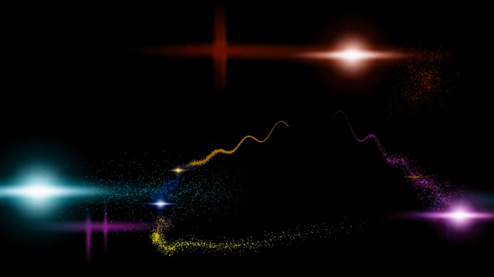

Concert Visuals
Visuals created for a fanmade Hatsune Miku concert in Godot.
Built as real time effects and rendered out for use in a Premiere project to ensure stable playback. The
structure is made up of short transitions timed to the set.
Uses procedural animation, including a generated helix mesh and multiple outro effects.